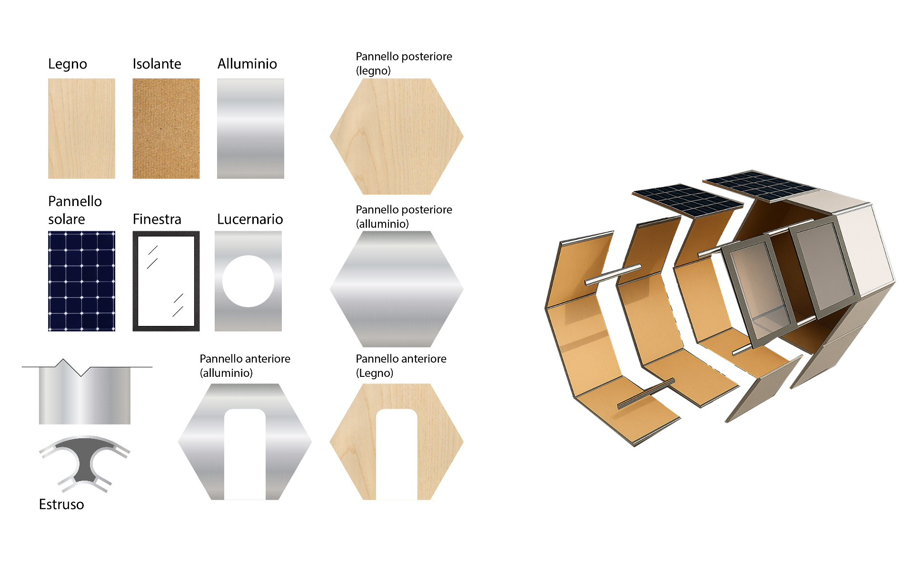
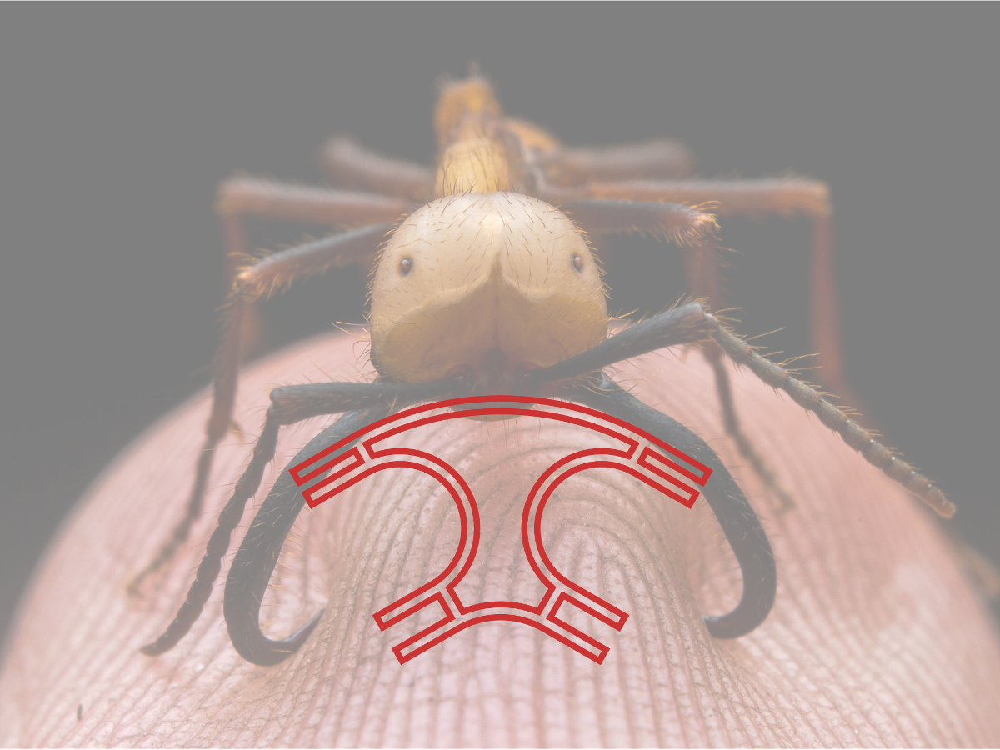
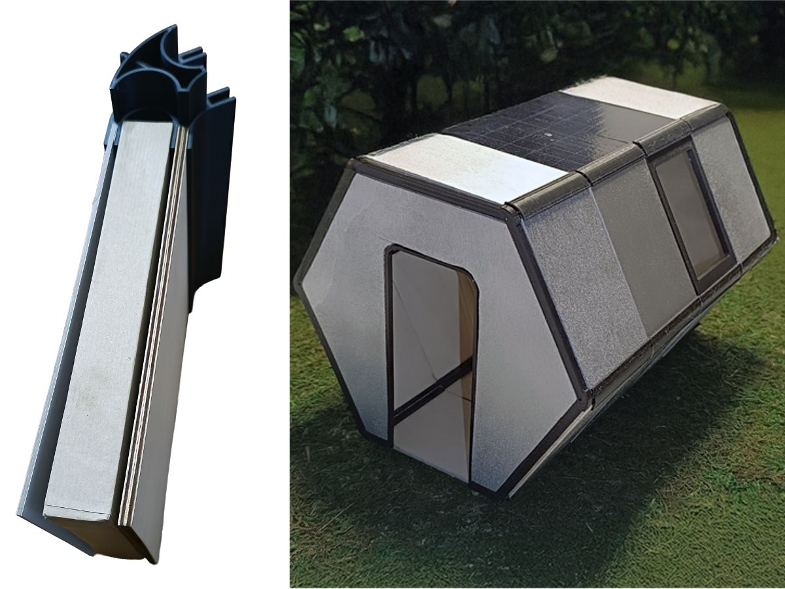
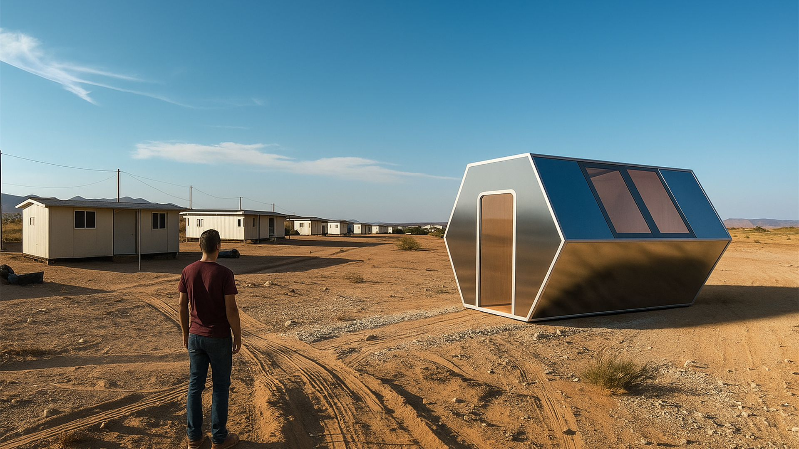

Aurora
Ispirato al comportamento cooperativo delle formiche legionarie, Aurora è un rifugio temporaneo d'emergenza. Unisce i principi dell'Ecodesign a un sistema costruttivo rapido, scalabile e completamente smontabile, senza lasciare alcun residuo nell'ambiente.

- Tipo
- Progetto di corso
- Anno
- 2025
- Ruolo
- Design e prototipazione
- Strumenti
- Rhino, Adobe Dimension, Stampa 3D
Il brief
La sfida era progettare una soluzione abitativa per contesti di emergenza (disastri naturali, crisi sociali) che superasse i limiti delle tensostrutture o dei container attuali, spesso lenti da installare e difficili da smaltire. L'obiettivo era ideare un sistema leggero, trasportabile e altamente flessibile, capace di garantire un rifugio sicuro e dignitoso, abbattendo drasticamente i tempi di assemblaggio in loco e l'impatto ambientale.
Il processo
Il processo ha seguito i dettami della biomimesi, studiando la capacità delle formiche di creare strutture reversibili incatenando i propri corpi. Questo principio è stato tradotto in ingegneria: ho progettato un giunto modulare lineare da estrudere in alluminio, capace di collegare a secco pannelli stratificati (legno, isolante, T-bond). Per validare le tolleranze di incastro, la logica di assemblaggio esagonale e la solidità dell'assieme, ho realizzato un accurato prototipo fisico in scala 1:20.



Il risultato
Aurora è un sistema costruttivo "chiavi in mano" basato sulla pura modularità. L'assenza di collanti e l'uso esclusivo di incastri meccanici rendono l'architettura 100% reversibile. Il singolo modulo base può essere replicato e aggregato all'infinito per formare veri e propri insediamenti comunitari, offrendo una resilienza strutturale distribuita che si adatta dinamicamente alle esigenze del territorio e della popolazione.